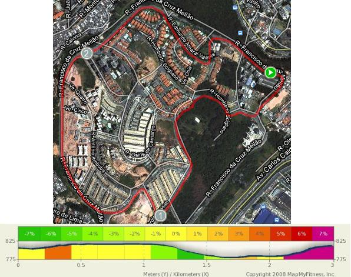
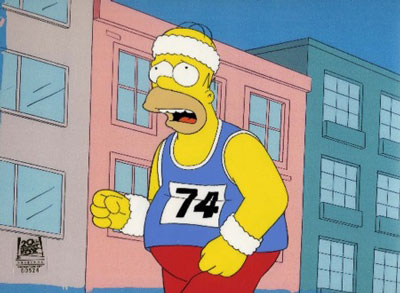
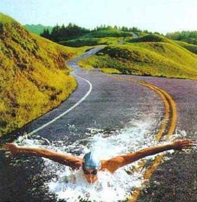

Cia. Ex-sedentário
vamo, vamo, vamo…
Domingo tive o meu melhor dia de treino, levantei as 06:00h e fui fazer uma prova cheguei em casa era umas 09:30 o sol já esta muito forte eu sabia que não ia fazer muito bem correr e como esse treino seria longo 15Km o sol já estaria rachando o coco, quando eram quase 10:00h estava eu fazendo meu alongamento e partindo para a corrida, fiz um treino por volta do meu condomínio aqui tem muito morro subidão mesmo o percurso que eu montei tem 3km então foram cinco voltas e sem água e nesse sol foi puxado, mas nada de esforço heróico foi o normal de treino no final estava ate me sentindo a vontade para correr, hoje (segunda) tirei para descansar porque amanha tem mais.
Estava esquecedo do tempo, o treino durou 1h19min
Estou colocando aqui o mapa desse treino com as elevações.

 Pretendo ser breve aqui. 2 semanas sem treinos e as razões não só são as mesmas como pioraram.
Pretendo ser breve aqui. 2 semanas sem treinos e as razões não só são as mesmas como pioraram.
Tanto o Claudio como o Thiago conseguiram mais quando criaram compromissos públicos.
Me proponho um desafio de treinar amanhã cedo, faça chuva ou faça sol, e como diria o Claudio, um presente para mim.
Sexta-feira: Pulei da cama às 04:30 horas. Poderia ter ficado mais, porque a Mari estava de folga por ser funcionária pública municipal. Enrola daqui faz cera de lá. Vou de carro ou parto a pé? Enfim, 06:00 estava eu na Avenida Edgar Facó cujo canteiro central se encontra bem arborizado com uma trilhazinha de chão batido. Excelente. E as arvorezinhas meio que amenizam o monóxido de carbono. Também há a companhia de corredores, caminhantes e cachorreiros. Gosto de todos eles. Admiro os caminhantes. Adoro cachorros. E sou fã inverterado de corredores, quaisquer deles.
Creio que o vai deva ter uns 700 metros e o vem, idem. Estava eu no segundo vai-e-vem quando sinto uma vontade de tentar abrir a passada, ritmando-a para aprender a correr e deixar os trotes para quando estiver pilando calçadas, esperando faróis abrirem, subindo e descendo sargetas e pegando as lombas, tal como o treino de quinta (aliás, delicioso).
Isso era o que desejava naquela planura, chão macio como um chão deve ser para as articulações dadas as proporções do concreto: Inimigo número zero do corredor.
Mas meu desejo foi contido por uma voz abafada, que parecia tentar sair de um rocambole de banha. Estranho aquilo, de onde vinha? Era eu mesmo. Mas lá dentro. Do coração, já menos atolado em banha do que antes.
Quando ele percebeu que eu o ouvia tratou, de dizer rispidamente:
– O que você está tentando fazer? Acelerar? Correr? É sensato? Você nem ao menos se alimentou para isso. Vem treinando todos os dias em Jejum. Essa dor que anda lhe afligindo nas costas, acha que é do quê? Massa magra se dissipando juntamente com o suor. Não era isso que você estava fazendo consientemente? Pois então. Aceite este estágio. Não acelere, aliás, diminua já porque tenho mais coisas para lhe falar.
De repente eu diminui mesmo. Não sei o quanto. Mas sentia que o movimento era contínuo. Era trote. Leve, mas trote. Não sentia esforço algum, nem aquela sensação besta de que o treino não está valendo de nada por falta daquela pitadinha de esforço necessário para ser o minimamente desafiador. Não sentia o trote. Sentia o corpo simplesmente indo. Muito ao contrário do que acontecia minutos antes, quando eu queria dar um pau na máquina, com sofrimento, apenas para não perder a oportunidade do local. Achei até estranha aquela introspecção que me acometia, justo ali no meio de um trânsito parado. Pessoas já estressadas. Pontos de ônibus lotados. Era o último lugar que eu imaginava fosse acontecer isso, considerando os lugares e horários de plena paz que costumo treinar. Mas aconteceu. Não via nem ouvia nada. Abaixei a cabeça sendo levando pelo movimento automático. Meu coração então dizia:
– Cláudio, já parou para perceber realmente se o seu primeiro objetivo de retorno às corridas já não foi alcançado. Convido-o para lembrar de como se sentia ontem a noite. Não estava exausto? Exaurido ao ponto de não ter disposição para ler sequer um bilhete da sua amada? Cansaço intenso? Muito bem. Mas será que não este não era um pouco diferente do cansaço intenso que sentia três meses atrás. No cansaço de ontem você desejava a cama. Baixinha de quadril largo e acohedora. Desejável e acessível. No cansaço de antes, você desejava era um milagre diante do desespero de saber que a cama era o último lugar que você poderia se sentir bem. Onde você se afogava. Isso quando não era surpreendido com um refluxo que mais parecia um golfada, que de tão amarga, azedava-lhe a própria vontade de viver até o almoço do dia seguinte. A solução então era se sentar no sofá para acordar 40 minutos depois com a pança embebida em saliva morta (baba) e a nuca doendo. Arriscava ir até o quarto mas desitia no meio caminho, retornado ao sofá para mais uma sessão de 40 minutos com baba no barrigão e torcicólo no nucão.
– Você se lembra disso? Pois é a hora de agradecer a dádiva. Seu esforço já fez com que você voltasse a dormir na horizontal. Na cama. Ao lado da mulher que tanto ama. Sono que se ainda não está perfeito ao menos repara-lhe do cansaço mil vezes mais do que antes.
Eu ouvi tudo aquilo. Foi dito pausadamente. Enquanto ouvia, sentia que passava um vai-e-vem, seguido de mais um, depois outro. Tudo com o corpo se movendo sozinho para que eu pudesse ouvir e sentir tudo que eu precisava.
De fato. Uma transformação já ocorreu. Posso agora dizer que voltei para o aconchego de uma cama, a minha cama, onde também dorme a mulher mais linda do mundo. Outrora, é claro, me envergonhava em dizer pra quem quer que fosse, o que realmente estava acontecendo e como estava acontecendo.
Eu estou ficando poucas horas na cama, mas elas me estão sendo infinitamente mais proveitosas. A forma que tenho de retribuir é levantando às 04:30, mesmo com audiências, prazos, clientes, pós graduação, trânsito, mau humor geral e a mediocridade. Não quero mais a mediocridade na qual eu estava vivendo. Quero gozar. Gostar, amar, viver e principalmente aprender para compartilhar com a pessoa mais importante na minha vida que é o Henrique.
A fala de mim para mim mesmo foi um alerta de que eu estava começando a deixar de usar o exercício físico como um acarinhamento. Por que querer acelerar se o combinado era que eu me acarinhasse doce e levemente. Calma. Tudo terá a sua hora. Num dado momento o corpo pedirá mais intensidade, quando então a dieta será de aporte. A maratona não vai embora. Ela está lá no cume me esperando, sem pressa. Talvez ela custe muitas tentativas frustadas, já que requisita que eu esteja dominando a minha ansiedade.
Fui tomado por uma paz. Um alívio e um alento. Mais do que isso, uma certeza de que estou aprendendo. A certeza de que não sou mais um adolescente. A certeza de que a maturidade me trará obstinação e perseverança por mais cíclico que possa parecer a corrida pelo “sucesso”.
O dia de hoje foi especial. Senti-me radiante. Senti-me bonito com o terno recem chegado da lavanderia após ter ficado três anos num canto mofado do guarda roupa. Eu sorri muito hoje. Sorri para todo mundo. Deixei as amarras em casa, junto com a gravata. Junto com o cinto (de castidade? Será?) Despojado, jovial e sedutor. Seduzi meus amigos do trem. Conquistei expressões exclamativas. Que gostoso ouvir um como vc está bem. Visivelmente feliz. Alegre e, lógico, palhaço.
De noite, após ter ido a esbórnia com pizza. Eis que a minha amada me presenteia com um shorts de corredor. Da adidas, azul, lindo, mas tão pequenino. Será que me serve? Não é que serviu. Olhe, combina com os tênis novos, ainda não estreiados. A camiseta branca deu o arremate. Faltava alguma coisa… CORRER. Pois fui “correndo” cumprimentar o natalício de um amigo que ainda estava no trabalho, a um quilômetro daqui. Voltei de lá por uma lomba de responsa e os últimos tres quarteirões foi de um inédito sprint, assim considerada uma corridinha não lenta, mas longe de ser rápida. Cá estou eu, 01:22, feliz da vida a contar a epopéia do dia de hoje.
Se chegou até aqui. Agradeço a paciência.
Sempre que vejo esse vídeo ou escuto falar desses dois me anima muito para treinar e resolvi dividir com todos aqui um pouco sobre eles.
O Team Hoyt’ (Equipe Hoyt) é composto pelo pai (Dick Hoyt) e o filho (Rick Hoyt, nascido em 1962) em Massachusetts (EUA), juntos completaram maratonas, triatlos e outros eventos esportivos. Rick é deficiente desde o nascimento, pois ao nascer, seu cordão umbilical ficou preso ao pescoço, e ele perdeu oxigenio no cerebro.
Graças aos seus pais, que ignoraram os avisos dos médicos que diziam que ele viraria um vegetal. Aos 12 anos Rick começou a usar um computador especial para se comunicar, usando movimentos de sua cabeça. Suas primeiras palavras foram: “Go Bruins!”, então sua familia descobriu que ele era um fã de esportes. Eles o ajudaram a correr sua primeira corrida em 1977, uma corrida beneficente de cinco milhas.
Dick é tenente-coronel aposentado da Air National Guard. Rick é graduado na universidade de Boston e agora trabalha na faculdade Boston. Eles continuam competindo em corridas, e também são motivadores.
Até Junho de 2005, o Team Hoyt já participou de um total de 911 eventos, incluindo 206 triatlos (seis deles competições Ironman Triathlon), vinte duatlos, e 64 maratonas, incluindo 24 maratonas de Boston consecutivas. Eles também pedalaram e correram a corrida dos EUA, em 1992 (uma jornada de 3735 milhas, completa em 45 dias).
Quando perguntam a Rick uma coisa que ele deseja, que ele gostaria de dar a seu pai, ele responde: “A coisa que eu mais gostaria de fazer por meu pai, seria senta-lo em uma cadeira e eu poder empurrar ele com minhas forças”
Video deles em um Ironman:
Hoje treinei, estou conseguindo cumprir a missão hoje seria dia de natação conforme a programação, mas como todos sabem tive que mudar, o treino foi de 6km podia ir mais mas preferi ficar com esses 6km mesmo, sexta feira não é fácil estou muito cansado estou dormindo pouco a semana inteira, media de 6 horas por noite como preciso de no mínimo 8 estou quebrado mesmo, bom é isso na terça eu volto pra contar como foram os treinos do final de semana.
Carinho, atenção, incentivo e camaradagem. Tudo isso é bom. Lava alma, aplaca dores e dissabores. Nos empurra. Fazem-nos sentir especiais, únicos. O Fábio Namiuti, a quem procurei meio discretamente, aqui visitou e me fez chorar. Um choro de regojizo. Um choro de orgulho. Choro de quem se sente realmente bem aventurado e digno de todas as benesses que a vida pode oferecer.
Obrigado, Fábio, de coração. A gente se vê.
Colo aqui o comentário, para que eu sempre o veja e sinta a energia boa que ele trás.
Fábio Namiuti says:
29/10/2009 at 09:51
Meu amigo Claudio!Que satisfação em receber sua mensagem lá no meu Arquivo de Corridas. Agradeço pela visita e pelas palavras. Foi um longo caminho percorrido, literalmente, desde que nos falamos pela última vez. Que já me levou a três maratonas, inclusive. Nenhuma delas ainda do jeito que eu gostaria, é bem verdade, mas sempre com muita alegria e disposição para continuar tentando.
Sensacional o blog! Parabéns a você e ao Alex pela iniciativa. Li atentamente cada postagem, desde o começo. Ri, me emocionei e me vi em muitas das situações descritas, já que, para me tornar também um ex-sedentário, passei por muitas delas. Além do peso (cheguei aos 110 Kg), tive que vencer também o vicio de fumar e uma hipertensão arterial que a combinação dos fatores me trouxe de “brinde”.
Todo sucesso nesse seu recomeço. Continue tendo muita força, fé, serenidade, bom humor (os cordéis são simplesmente impagáveis) e a perseverança que vem demonstrando desde os primeiros escritos. Estarei daqui na torcida para que vocês façam uma excelente (re)estreia nas corridas em novembro. Que curtam cada passada, antes e durante a prova. E que, depois, se orgulhem muito daquilo que conquistarem. Sucesso, nessa e em todas as metas futuras!
A gente se encontra numa dessas corridas por aí!
Grande abraço.
Fábio Namiuti
http://www.fabionamiuti.hd1.com.br
Hoje o treino foi muito difícil, vou contar o que aconteceu e a mudança de planos.
Ontem meu treino foi de natação um tempo depois do treino comecei a ficar com a respiração curta, ficava cansado ate para falar, fiquei pensando o que poderia ser e tome Google para me ajudar, acabei descobrindo que o cloro da piscina causa isso e quando a piscina é aquecida isso se agrava, pois o vapor que sai da água fica no ar e eu ficava inalando tudo isso, antes eu não sentia porque a água era ionizada, ou seja, outro tipo de tratamento, resumindo por causa disso rodei 6km bem lento pois hoje ainda sentia um pouco de dificuldade para respirar, agora o treino vai ser só corrida e essa é a mudança que vou fazer, estava gostando de nadar pena que isso me complicou, mas as metas estabelecidas estão ai e amanhã tem mais treinos espero estar 100%.

São 06:31 horas. Acordei às 04:32 horas, com vontade de chorar, só levantei mesmo porque me lembrei do post do Thiago do qual transcendia alegria e orgulho. Ah… Eu também quero, pensei.
Levantei
tomei água
tive ânsia (hei de acostumar a isso, ainda)
fui ao banheiro
voltei
Cadê a roupa?
Fui lá fora
peguei a roupa
vesti
mais água
jaqueta
e rua (05:05 horas)
Hoje foi da hora. Como esqueci o celular no escritório, fui sem relógio nenhum mesmo, mas em compensação fiz um percurso de corredor, de verdade. Corredor que ainda trota, bem devagarinho. Sai pela Mutinga pela esquerda chegando do treino pela direita. Hoje iria bem um mapinha. Cinquenta e cinco minutos. Muito bom. Na maioria das vezes, na madrugada, fico vai-e-vem de olho no tempo, para ver se ele passa. Hoje não. Desenhei o percurso de imediato e só fui curtindo-o, orgulhoso. Eu sabia que não demoraria muito. Muito bom Garotão.
Consegui de novo, esse negócio de assumir compromisso num é que funciona rapaz, pensei duas vezes na hora de levantar, mas levantei criei mais uma estratégia deixo o celular longe do alcance hehe quando ele toca tenho que descer da cama e por ser uma beliche da mais trabalho ainda e já que desci não volto.
Bom o treino de hoje foram os prometidos 40 minutos nadando direto, totalizei nesse tempo 2.000mts uma beleza, me senti muito bem, amanha volto a corrida depois conto como foi.

Essa é minha vida!
Acabaram de mostrar o modelo da camiseta da prova que eu e o Claudio vamos correr. Clique para ver os detalhes.
Pena que já vem pisada!
.jpg "DSC01792 (1024x576)")
.jpg "DSC01841 (1024x576)")
.jpg "DSC01860 (1024x576)")
.jpg "DSC01864 (1024x576)")
.jpg "DSC01895 (576x1024)")
.jpg "DSC01928 (1024x576)")


Nós somos 100 Juízo
Nós somos Baleias
Últimos comentários